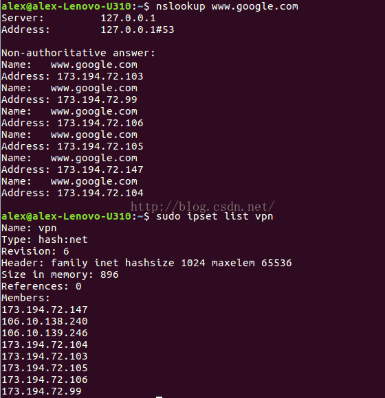

001、内核管理
-
1、清理多余的Linux内核
- 当系统升级的时，旧的内核版本并不会被清理，之后就会导致/boot空间不足；卸载旧的内核版本可解决此问题；
# 查看系统已经安装的内核版本 # 状态install说明已安装的版本 dpkg --get-selections | grep linux dpkg --list | grep linux # 查看系统当前使用的内核版本 uname -r# 使用purge命令删除相应的内核 # Ubuntu内核镜像包含: linux-headers-(内核头文件)、linux-image-(内核镜像)、linux-image-extra-（额外的内核模块） apt purge linux-image-4.4.0-103-generic # 或 apt purge linux-image-4.4.0* # 若删除时，出现类似以下错误 # “linux-headers-generic : Depends: linux-headers # -XXX-generic but it is not going to be installed” # 进入/boot目录，将把4.4.0版本的config-4.4.0-*、vmlinuz-4.4.0-*、 # initrd.img-4.4.0-*、abi-4.4.0-*、System.map-4.4.0-*、retpoline-4.4.0-*都删除 # 然后执行apt-get install -f命令进行修复 # 最后，再次使用purge命令删除相应的内核 # 若GRUB配置在删除旧内核后没有正确升级，执行以下命令更新配置 update-grub2 或 update-grub 清理/usr/src目录，删除已经卸载的内核目录
-
2、升级Linux内核
uname -r apt update # 查看可用的Linux内核版本 apt-cache showpkg linux-image # 安装想要升级的Linux内核版本，如linux-image-4.10.0-22-generic apt-get install linux-image-4.10.0-22-generic # 更新GRUB update-grub # 安装完成后重启 reboot
002、服务管理
-
1、Linux的服务，有
/etc/init.d、service、systemctl三种方式管理：-
1）
/etc/init.d/XX start|stop|...- 本质上会去/etc/init.d目录，查找执行相关的程序文件；
- 缺点：启动时间长（init进程是串行启动）、启动脚本复杂（脚本中需要处理各种case）；
- 一般常用软件的脚本都已编写好，不需要再编写，但其他软件需要自己编写；
/etc/init.d/mysql start -
2）
service XX start|stop|...- 本质还是/etc/init.d，还是会去/etc/init.d目录，查找执行相关的程序文件；
service mysql start -
3）
systemctl start|stop|... XX-
systemd（system daemon，系统守护进程）是Linux系统最新的初始化系统（init），用于提高系统的启动速度；systemd是一组命令，其包括systemctl、systemd-analyze（查看启动耗时）、hostnamectl（查看当前主机的信息）等命令；
-
systemctl是systemd的主命令，用于管理系统及进程，其需要的配置文件更简洁，只需要配置执行文件、pid文件路径等即可；# 执行 systemctl start mysql systemctl start mysql.service
-
-
-
2、systemctl命令
-
1）systemctl管理着systemd的Unit，主要有4种类型文件：
.mount、.target、.wants、.service；这里主要介绍.service（结尾文件）；- .mount（结尾文件）：定义一个挂载点，[Mount]节点里配置What、Where、Type三个数据项；
- .target（结尾文件）：定义一些基础的组件，以供.service调用；
- .wants（结尾文件）：定义要执行的文件集合，每次执行时，.wants文件夹里面的文件都会执行；
.service（结尾文件）：定义了一个服务，分为[Unit]（控制单元，表示启动顺序和依赖关系）、[Service]（服务，表示服务的定义）、[Install]（安装，表示如何安装配置文件）3个模块；
-
2）
systemctl也兼容了service，也会去/etc/init.d目录，查找执行相关的程序文件；
-
-
3、案例：httpd.service配置文件
[Unit] Description=httpd # 当前配置文件的描述信息 After=network.target # 表示当前服务是在哪个服务后面启动；一般定义为网络服务启动后启动 [Service] Type=forking # 定义启动类型 ExecStart=/usr/local/apache/bin/apachectl start # 定义启动进程时，执行的命令 ExecReload=/usr/local/apache/bin/apachectl restart # 重启服务时，执行的命令 ExecStop=/usr/local/apache/bin/apachectl stop # 定义关闭进程时，执行的命令 PrivateTmp=true # 是否分配独立空间 [Install] WantedBy=multi-user.target # 表示多用户命令行状态 -
4、
XX.service（结尾文件）配置文件的字段含义-
1）
[Unit]字段（主要给出服务描述、启动顺序和依赖关系）- a.
Description：当前服务的简单描述； - b.
Documentation：服务文档位置； - c.
After、Before：表示启动顺序，不涉及依赖关系；Before=xx.service，表示本服务在xx.service启动之前启动；After=yy.service，表示本服务在yy.service之后启动； - d.
Wants：表示该服务和某服务存在某种弱依赖关系，即某服务停止运行或退出，不影响该服务继续运行； - e.
Requires：表示”强依赖”关系，即某服务停止运行或退出，该服务也必须停止运行； - f.
Wants与Requires：只涉及依赖关系，与启动顺序无关，默认情况下是同时启动的；
- a.
-
2）
[Service]字段（服务的启动行为，以及如何启动、重启、停止等信息）- a.
Type字段：定义启动类型；simple（默认值）：ExecStart字段启动的进程为主进程，进程不会fork；forking：ExecStart字段将以fork()方式启动，此时父进程将会退出，子进程将成为主进程；使用此启动类型，应同时指定PIDFile=，以便systemd能够跟踪服务的主进程；- oneshot：类似于simple，但只执行一次，systemd会等它执行完，才启动其他服务；可能需要同时设置RemainAfterExit=yes，使得systemd在服务进程退出之后，仍然认为服务处于激活状态；该方式允许指定多个希望顺序执行的用户自定义命令；
- notify：类似于simple，启动结束后会发出通知信号，然后systemd再启动其他服务；
- dbus：类似于simple，但会等待D-Bus信号后启动；
- idle：类似于simple，但是要等到其他任务都执行完，才会启动该服务；一种使用场合是为让该服务的输出，不与其他服务的输出相混；
- b. 执行命令的相关字段；
ExecStart：定义启动进程时执行的命令，就是手动启动时执行的命令；ExecReload：重启服务时执行的命令；ExecStop：停止服务时执行的命令；- ExecStartPre：启动服务之前执行的命令；
- ExecStartPost：启动服务之后执行的命令；
- ExecStopPost：停止服务之后执行的命令；
- c. KillMode：定义systemd如何停止服务；
- control-group（默认值）：当前控制组里面的所有子进程，都会被杀掉；
- process：只杀主进程；
- mixed：主进程将收到SIGTERM信号，子进程收到SIGKILL信号；
- none：没有进程会被杀掉，只是执行服务的stop命令；
- d. Restart：定义服务退出后，systemd的重启方式；
- no（默认值）：退出后不会重启；
- on-success：只有正常退出时（退出状态码为0），才会重启；
- on-failure：只有非正常退出时（退出状态码非0），包括被信号终止和超时，才会重启；
- on-abnormal：只有被信号终止和超时，才会重启；
- on-abort：只有在收到没有捕捉到的信号终止时，才会重启；
- on-watchdog：只有超时退出，才会重启；
- always：不管是什么退出原因，总是重启；
- 对于守护进程，推荐设为on-failure；对于那些允许发生错误退出的服务，可以设为on-abnormal；
- e. RestartSec：表示systemd重启服务之前，需要等待的秒数；
- f. User：设置服务的用户名；
- g. WorkingDirectory：指定服务的安装目录；
- h.
PIDFile：pid文件路径； - i. PrivateTmp=True：表示给服务分配独立的临时空间；
- j. RemainAfterExit：若设置为True，服务会被认为是在激活状态，即使所以的进程已经退出；默认的值为False，该选项只有在Type=oneshot时需要被配置；
- a.
-
3）
[Install]字段（何安装这个配置文件，即怎样做到开机自启）WantedBy：表示该服务所在的Target；Target表示服务组，表示一组服务；- systemd有默认的启动Target就是
multi-user.target，在这个组里的所有服务，都将开机启动；WantedBy=multi-user.target：表示服务所在的Target是multi-user.target；
- systemd有默认的启动Target就是
- Alias：为服务提供一个空间分离的附加名字；
- RequiredBy：服务被允许运行需要的一系列依赖服务，RequiredBy列表从Require获得依赖信息；
- Also：指出和服务一起安装或者被协助的服务；
- DefaultInstance：实例服务的限制，该选项指定如果服务被允许运行默认的实例；
-
-
5、
/lib/systemd/system/、/usr/lib/systemd/system/、/etc/systemd/system/的差异：- 1）它们都是与systemd系统管理工具相关的目录，用于存储系统服务单元文件（
.service）； - 2）
/lib/systemd/system/：包含了系统默认的systemd服务单元文件； - 3）
/usr/lib/systemd/system/：包含了软件包安装所提供的systemd服务单元文件； - 4）
/etc/systemd/system/：系统管理员用来存储自定义和覆盖默认设置的地方； - 5）在配置系统服务时，最好使用
/etc/systemd/system/目录，来添加或修改服务单元文件，以便保留系统更新时的原始设置；
- 1）它们都是与systemd系统管理工具相关的目录，用于存储系统服务单元文件（
-
6、参考：
- Linux中service文件详解：
https://blog.csdn.net/a913909626/article/details/118405378 - linux 之.service文件简介 （新版systemctl服务）：
https://juejin.cn/post/7037000593839243301
- Linux中service文件详解：
003、系统时间
-
1、格林尼治标准时：
GMT，Greenwish Mean Time，指位于伦敦郊区的皇家格林尼治天文台（本初子午线）的标准时间，因为地球自转的速度是不均衡的，该时间不够精确； -
2、协调世界时：
UTC，Coordinated Universal Time，基于原子物理学的特性，更加精确基本不会产生误差，被应用在互联网标准中； -
3、基本上可以认为
GMT = UTC（误差不超过0.9秒），例如北京时间 = UTC+8 = GMT+8；# 查看当前系统时间 date -R # 执行以下命令，按提示操作，修改时区到UTC dpkg-reconfigure tzdata # 同步网络时间 apt-get install ntpdate // 安装ntpdate工具 ntpdate cn.pool.ntp.org # 将时间写入硬件（防止重启时间被还原） hwclock --systohc -
4、修改系统时间后，必须手动重启重启crontab、rsyslog服务（只是重启服务器是不行的），否则crontab日志时间与系统时间不一致；
systemctl restart cron systemctl restart rsyslog
004、vim使用
-
1、vim是vi的升级版本，其不仅兼容vi的所有指令，而且还支持无限制多级撤消、语法高亮等特性；vi适用于文本编辑，vim更适用于编码；注意：vim使用vim命令打开文件，而不是vi命令；
-
2、vi模式
- 插入模式：可以进行输入字符，按ESC回到命令模式；
- 命令模式：可以进行移动光标、删除复制移动字符、行等操作；
- 底行模式：可以进行保存文件、退出设置vi、查找等操作（底行模式也可以认为是命令模式）；
-
3、常见命令
:set nu # 显示行号 :w # 保存文件，不退出vim :w FileName # 将修改另外保存到FileName，不退出vim :w! # 强制保存，不退出vim :q # 不保存文件，退出vim :q! # 不保存文件，强制退出vim :wq # 保存文件，退出vim :wq! # 强制保存文件，退出vim :e! # 放弃所有修改，从上次保存文件开始再编辑 :%d # 清空所有内容# 跳到文件首行 方式1：输入gg 方式2：输入:0或:1，然后回车 # 跳到文件尾行 方式1：输入G（Shift+g） 方式2：输入:$，然后回车 # 跳到指定行 方式1：先输入数字行数，再输入gg；例如，跳转到123行，输入123gg 方式2：:数字行数 # 跳到当前行的行首 输入0（数字） # 跳到当前行的行尾 输入$ # 跳到基于当前行偏移的行尾 先输入数字偏移行数，再输入$；1$表示当前行的行尾；例如，向下偏移到4行，输入5$# 整个文本内容将被选中 输入ggVG；其中，gg将光标移动到文本的开头，V进入可视模式，G将光标移动到文本的结尾 # 复制 y # 复制选中内容 yy # 复制光标所在的行 数字yy # 复制多行（从光标所在的行，向下开始） y$ # 复制光标所在位置到行尾 数字y$ # 复制光标开始的多行 yG # 复制当前行到文件首行 ygg # 复制当前行到文件末尾 yw # 复制光标所在的单词 数字yw # 复制光标开始的多个单词 # 粘贴 p # 粘贴到当前行的行尾 P（大写） # 粘贴到当前行的行首 # 删除 dd # 删除光标所在的行 数字dd # 删除多行（从光标所在的行，向下开始） dw # 删除光标所在的单词 数字dw # 删除光标开始的多个的单词 d$ # 删除光标所在位置到行尾 nd$ # 删除光标开始的多行 x # 删除一个字符 数字x # 删除多个字符（从光标所在的位置，向后开始） u # 撤回 U # 大撤回# 搜索 :/word # 向下查找 :?word # 向上查找 # n查找下一个，按N查找上一个 # 替换 输入:[RANGE]s/pattern/string/[c,e,g,i]，或者将/换成# # RANGE：指查找替换范围；如： # 1,20表示从第1行至第20行； # 1,$表示从第1行至最后一行，或者用%表示； # .,$表示从当前行到最后一行； # s：表示替换操作； # pattern：需要替换掉的字符串； # string：将pattern替换为string； # 标志符 # c：即confirm，每次替换前会询问； # e：不显示error； # g：globe，不询问，整行替换； # i：ignore不分大小写； # I：大小写敏感； # 在当前行查找oldWords，并将查找到的第一个oldWords替换为newWords :s/oldWords/newWords/ # 在当前行查找oldWords，并将查找到的所有oldWords替换为newWords :s/oldWords/newWords/g # 从第n行到最后一行查找oldWords，并将查找到的每一行中的第一个oldWords替换为newWords :n,$s/oldWords/newWords/ # 从第n行到最后一行查找 oldWords，并将查找到的每一行中的所有oldWords替换为newWords :n,$s/oldWords/newWords/g :1,$s/ :%s/ -
4、VI编辑模式，使用方向键出现字母乱码
-
1）Ubuntu中，在vi编辑模式下，使用方向键时没有移动光标，而是在出现[A [B [C [D之类的字母乱码，使用退格键(Backspace键)无法删除，只能用Delete键删除；
-
2）解决办法：
-
a. 办法1：
- 修改
/etc/vim/vimrc.tiny，将“compatible”改成“nocompatible”（非兼容模式），set nocompatible，解决方向键变ABCD问题； - 添加
set backspace=2，解决退格键(Backspace键)无法删除问题；
- 修改
-
b. 办法2：
-
Ubuntu预安装的的是tiny版本，安装vim full版本，就可以正常了；
apt remove vim-common apt install vim
-
-
-
3）参考：
- Ubuntu Vi方向键[A [B [C [D问题解决：
https://www.awaimai.com/262.html
- Ubuntu Vi方向键[A [B [C [D问题解决：
-
005、SSH登录
-
1、若需要SSH登录到其他机器上，需要安装
openssh-client；若需要本机开启SSH服务，需要安装openssh-server；# 查看是否已安装相关包 dpkg --get-selections | grep openssh-client dpkg --get-selections | grep openssh-server # 若出现sshd，则说明ssh-server已经启动 ps -aux | grep ssh -
2、ssh-server配置文件位于
/etc/ssh/sshd_config（不是ssh_config）；RSAAuthentication yes：允许使用纯RSA公钥认证（仅用于SSH1）；PubkeyAuthentication yes：允许公钥认证（仅用于SSH2）；PasswordAuthentication no：不允许密码认证（默认允许）；AuthorizedKeysFile xx：用于认证的公钥路径；
-
3、SSH（Secure SHell）目前有两个不兼容的版本：SSH1、SSH2；
- SSH1采用DES、3DES、Blowfish、RC4等对称加密算法保护数据安全传输，而对称加密算法的密钥是通过非对称加密算法（RSA）来完成交换；使用循环冗余校验码（CRC）来保证数据的完整性（这种方法有缺陷）；
- SSH2避免了RSA的专利问题，并修补了CRC的缺陷；使用数字签名算法（DSA）和Diffie-Hellman（DH）算法代替RSA来完成对称密钥的交换，用消息证实代码（HMAC）来代替CRC，并且也增加了AES、Twofish等对称加密算法；
-
4、配置ssh公钥认证
- 1）服务端将
RSAAuthentication、PubkeyAuthentication前#注释去掉，设置允许公钥登录；并重启ssh服务systemctl reload sshd； - 2）将客户端的公钥内容，粘贴到服务端的登录用户名目录下的
.ssh/authorized_keys文件中（默认的认证公钥的路径）； - 3）在客户端，将私钥放在~/.ssh/目录中；
- 4）客户端进行连接：
ssh -p PORT USERNAME@DOMAIN（若为密码认证，之后还需要输入密码）；ssh默认的端口为22，若为默认端口则可省略-p参数，比如ssh root@192.168.1.1； - 5）客户端断开连接：
exit； - 6）客户端生成公钥私钥命令：
ssh-keygen -t rsa -C "xx@email.com"或者ssh-keygen；
- 1）服务端将
-
5、ssh-server可以配置成
同时支持公钥认证和密码认证，客户端优先使用公钥进行认证，若尝试不通过则会使用密码进行认证； -
6、注意：使用公钥认证，可能还需要输入密码，这个密码是生成私钥时配置的密码，不是密码认证的密码；
006、Ubuntu root默认密码、root SSH登陆
-
1、在Ubuntu系统中，为安全考虑，默认是没有设置root用户的密码的，也就是说，root用户是不能直接登录的；需要切换到root账号后，手动设置密码
passwd； -
2、在Ubuntu系统中，默认禁止root SSH登陆；开启步骤如下：
-
1）设置root密码；
-
2）修改
/etc/ssh/sshd_config配置，并重启sshd；-
a) 将
#PermitRootLogin prohibit-password配置项，修改为PermitRootLogin yes； -
b) 以下配置项，去掉注释：
StrictModes yes # 让ssh服务器在用户认证过程中，检查用户的家目录、~/.ssh/目录以及相关文件的权限设置 MaxAuthTries 6 # 允许用户尝试认证的最大次数 MaxSessions 10 # 单个网络连接上允许的最大会话数 -
c)
systemctl restart sshd；
-
-
007、查询软件安装时间
-
1、
/var/log/apt/目录的文件history.log.*（如history.log.1.gz）文件中有所有安装软件的信息，文件的格式如下：Start-Date: 2018-08-27 14:50:38 Commandline: apt-get install vim Install: vim-runtime:amd64....
008、查看实时网速
-
1、需要安装
nload工具（apt install nload）；# 查看所有网卡的实时网速 nload -m # 查看指定网卡的实时网速 nload eth0 -m -
2、macOS可以通过“活动监视器”下的“网络”标签底部的信息，查看实时网速；
009、查看网卡（全部、虚拟、物理）
# 查看 全部网卡
ls /sys/class/net/
# 查看 虚拟网卡
ls /sys/devices/virtual/net/
# 查看 物理网卡
ls /sys/class/net/ | grep -v "`ls /sys/devices/virtual/net/`"
010、使用systemd，配置开机执行脚本
-
1、配置步骤：
-
1）创建要执行的脚本；
- 脚本开头，一定要加
#! /bin/bash，表示此脚本使用/bin/bash来解释执行； - 脚本末尾，添加
exit 0，表示脚本执行到此结束，并以成功的状态退出；
vi my_startup_scipt.sh ============================== #! /bin/bash cd / touch "$(date +"%Y-%m-%d_%T").txt" echo "Create File Done!" exit 0 - 脚本开头，一定要加
-
2）给要执行的脚本，添加执行权限；
chmod u+x my_startup_scipt.sh chmod g+x my_startup_scipt.sh # 或 chmod +x my_startup_scipt.sh # 其他用户组也有执行权限 -
3）新增执行服务；
- 在
/etc/systemd/system目录，创建一个新的xx.service文件，用于配置开机启动脚本；
cd /etc/systemd/system vi StartupExample.service ============================== [Unit] Description=Startup Example [Service] ExecStart=/home/kk/my_startup_scipt.sh [Install] WantedBy=multi-user.target - 在
-
4）设置开机自启动；
- “新增执行服务”、“设置开机自启动”都需要root权限，所以该自启动服务是由root用户创建的；并且
在开机后，登陆账号前就执行了，与登陆的用户无关；
# 设置开机自启动 systemctl enable StartupExample.service # 禁止开机自启动 systemctl disable StartupExample.service # 手动运行 systemctl start StartupExample.service # 查看状态 systemctl status StartupExample.service - “新增执行服务”、“设置开机自启动”都需要root权限，所以该自启动服务是由root用户创建的；并且
-
-
2、参考：
- ubuntu 系统配置软件脚本自启动：
https://blog.csdn.net/qq_43371556/article/details/130507007 - 在 Ubuntu 上使用 systemd 配置开机执行脚本：
https://zhuanlan.zhihu.com/p/340755873 - 【精选】systemctl 命令和配置整理：
https://blog.csdn.net/baidu_41553551/article/details/125303909
- ubuntu 系统配置软件脚本自启动：
011、基于域名的流量管理（iptables、ipset、dnsmasq）
-
1、概述
-
iptables只能根据IP地址进行转发，不能识别域名； -
dnsmasq-full不仅可以实现“域名-IP”的映射，还可以把这个映射关系存储在ipset中，所以使用dnsmasq+ipset就可以实现iptables对域名的转发，从而实现很多功能，如禁止浏览某些网站、对国内外的流量进行不同路径的转发或者代理； -
原理：
dnsmasq接收到一个DNS查询结果，首先匹配配置文件（/etc/dnsmasq.conf）中的域名列表；若匹配成功某域名，就把IP的查询结果存储在一个或几个ipset集合中，然后使用iptables对这个ipset中的全部ip进行匹配并做相应的处理，如DROP或者REDIRECT；
-
-
2、步骤：
-
1）安装
dnsmasq-full、ipset； -
2）先建立vpn ipset表；
sudo ipset create 列表名 hash:ip // 建立完成之后，列出这个表的所有ip记录（目前当然是空的） sudo ipset list 列表名 -
3）将本机的dns服务器设置为
dnsmasq；编辑dnsmasq的配置文件（/etc/dnsmasq.conf）；- 前两行（黄色）是将所有.com 和.hk结尾的域名请求，都发往OpenDNS的服务器（端口5353），这样可以防止ISP的一些域名污染；
- 最后一行（黄色）是将yahoo.com和google.com的域名解析IP结果，存储到vpn的ipset中，准备交给iptables识别和转发；
-
4）使用
nslookup命令，依次查询yahoo.com和google.com，然后dnsmasq就会自动将这两个域名的解析结果，存放到刚刚建立的ipset中去；
-
5）再使用
iptables做相应的规则转发即可，比如把目标地址为这两个域名的流量转发到1080端口代理出去；sudo iptables -t nat -I PREROUTING -m set --match-set 列表名 dst -j REDIRECT --to-ports 1080 // 也可以做DROP或者RETURN处理 sudo iptables -t nat -I PREROUTING -m set --match-set 列表名 dst -j RETURN // 若IP集合不是目标地址而是原地址，需要把dst换成src -
6）若要处理的域名很多，写在
/etc/dnsmasq.conf会显得凌乱，可以新建一个配置文件（如ip_filter.conf），将配置写在这里，然后在/etc/dnsmasq.conf中引用该配置文件；
-
-
3、参考：
- Dnsmasq+ipset+iptables基于域名的流量管理：
https://blog.csdn.net/lvshaorong/article/details/52981169
- Dnsmasq+ipset+iptables基于域名的流量管理：
012、Crontab（定时任务）
-
1、安装管理Crontab
# 安装cron apt install cron # 管理cron服务 systemctl start|stop|restart|reload|status cron # 查看所有定时任务 crontab -l 或者 cat /etc/crontab # 添加、修改定时任务 crontab -e，进入编辑环境（首次选择编辑器：vi、nano）； -
2、Crontab任务格式
m h dom mon dow COMMAND # m：分钟，取值0~59，当为*时表示每分钟； # h：小时，取值0~23，当为*时表示每小时； # dom：天，取值1~31，当为*时表示每天； # mon：月，取值1~12，当为*时表示每月； # dow：星期，取值1~6，0表示星期天，当为*时表示每周； # m/2：表示每半分钟； # h/3：表示每20分钟； # 表示离散值，使用,分隔；如m位置表示第1、3、20分钟，则使用1,3,20# 1点的每分钟都会执行一次任务，也就是执行了60次 * 1 * * * COMMAND # 每天3点0时执行一次任务 0 1 * * * COMMAND# 每分钟执行一次date命令，将当前日期和时间追加到time.txt文件中， # 并且若有任何错误产生，也会被追加到同一个文件中 * * * * * date >> /time.txt 2>&1 # 在每个月的前七天中的每个星期一的0点，执行date命令 0 0 1-7 * 1 date >> /time.txt 2>&1
013、开启BBR，优化TCP速度
-
1、概述：
- BBR是Google最新开发的TCP拥塞控制算法，有着较好的带宽提升效果；
- Linux kernel 4.9开始引入BBR，若内核小于4.9则需要先升级内核；Ubuntu 18.04 LTS的Linux内核为4.15；
-
2、安装开启BBR：
# 运行`lsmod | grep bbr`，若结果中没有tcp_bbr，则先运行以下内容 modprobe tcp_bbr echo "tcp_bbr" >> /etc/modules-load.d/modules.conf# 添加配置 echo "net.core.default_qdisc=fq" >> /etc/sysctl.conf echo "net.ipv4.tcp_congestion_control=bbr" >> /etc/sysctl.conf # 保存生效 sysctl -p# 运行结果若均有bbr，则开启BBR成功 sysctl net.ipv4.tcp_available_congestion_control # 查看支持的算法 sysctl net.ipv4.tcp_congestion_control # 查看当前使用的算法
014、多语言（如终端显示英文）
-
1、Locale是软件在运行时的语言环境，包括
语言（Language）、地域（Territory）、字符集（Codeset）；其书写格式为：语言 [_地域 [.字符集]] [@修正值]；比如en_US.UTF-8、zh_CN.GB2312（表示中文_中华人民共和国.国标2312字符集）等； -
2、Locale按照所涉及到的文化传统的各个方面，分成
12个大类，分别：- 语言符号及其分类（LC_CTYPE）；
- 数字（LC_NUMERIC）；
- 比较和排序习惯（LC_COLLATE）；
- 时间显示格式（LC_TIME）；
- 货币单位（LC_MONETARY）；
- 信息主要是提示信息、错误信息、状态信息、标题、标签、按钮和菜单等（LC_MESSAGES）；
- 姓名书写方式（LC_NAME）；
- 地址书写方式（LC_ADDRESS）；
- 电话号码书写方式（LC_TELEPHONE）；
- 度量衡表达方式（LC_MEASUREMENT）；
- 默认纸张尺寸大小（LC_PAPER）；
- 对locale自身包含信息的概述（LC_IDENTIFICATION)；
-
3、其他的变量：
LANG：所有与locale有关的变量的默认值；LC_ALL：设置所有的LC_*的变量；LANGUAGE：大多数程序将此作为其界面语言；
-
4、Locale设定的优先级（高 到 低）：
- 1）
LANGUAGE：优先级最高，指定个人对语言环境值的主次偏好，例如zh_CN:en_US:en，冒号分隔的是多种选择； - 2）
LC_ALL设置的值； - 3）
LC_*设定的locale各方面（category）的值，可以覆盖LANG的值； - 4）
LANG设置的默认值；
- 1）
-
5、案例：
- 比如设置LC_ALL＝zh_CN.UTF-8，那么不管LC_*、LANG设定成什么值，它们都会被强制服从LC_ALL的设定，成为zh_CN.UTF-8；
- 若需要一个纯中文的系统，设定LC_ALL=zh_CN.XXXX，或者LANG=zh_CN.XXXX都可以；
- 若需要一个可以输入中文的环境，而保持菜单、标题、系统信息等等为英文界面，设定LC_CTYPE＝zh_CN.XXXX和LANG=en_US.XXXX就可以；
LC_CTYPE规定了系统内有效的字符以及分类，与输入有关；
-
6、
C是系统默认的locale，POSIX是C的别名；当新安装完一个系统时，默认的locale就是C或POSIX；设置LC_ALL=C，会把所有的LC_\*的变量设置一遍，可以去除所有的本地化设置，让命令能正确执行；- 若需要终端显示英文，可以
export LC_ALL=C（之后再unset LC_ALL），或者export LANGUAGE=en_US、export LANG=en_US.UTF-8（之后再unset LANGUAGE、LANG）；
- 若需要终端显示英文，可以
015、更换Ubuntu软件源
-
1、图形界面更换：
-
1）
Software & Updates-》Ubuntu Software-》Download From；
-
-
2、命令行替换：
-
1）配置文件：
/etc/apt/sources.list；# See http://help.ubuntu.com/community/UpgradeNotes for how to upgrade to # newer versions of the distribution. deb http://archive.ubuntu.com/ubuntu jammy main restricted # deb-src http://archive.ubuntu.com/ubuntu jammy main restricted ## Major bug fix updates produced after the final release of the ## distribution. deb http://archive.ubuntu.com/ubuntu jammy-updates main restricted # deb-src http://archive.ubuntu.com/ubuntu jammy-updates main restricted ## N.B. software from this repository is ENTIRELY UNSUPPORTED by the Ubuntu ## team. Also, please note that software in universe WILL NOT receive any ## review or updates from the Ubuntu security team. deb http://archive.ubuntu.com/ubuntu jammy universe # deb-src http://archive.ubuntu.com/ubuntu jammy universe deb http://archive.ubuntu.com/ubuntu jammy-updates universe # deb-src http://archive.ubuntu.com/ubuntu jammy-updates universe ## N.B. software from this repository is ENTIRELY UNSUPPORTED by the Ubuntu ## team, and may not be under a free licence. Please satisfy yourself as to ## your rights to use the software. Also, please note that software in ## multiverse WILL NOT receive any review or updates from the Ubuntu ## security team. deb http://archive.ubuntu.com/ubuntu jammy multiverse # deb-src http://archive.ubuntu.com/ubuntu jammy multiverse deb http://archive.ubuntu.com/ubuntu jammy-updates multiverse # deb-src http://archive.ubuntu.com/ubuntu jammy-updates multiverse ## N.B. software from this repository may not have been tested as ## extensively as that contained in the main release, although it includes ## newer versions of some applications which may provide useful features. ## Also, please note that software in backports WILL NOT receive any review ## or updates from the Ubuntu security team. deb http://archive.ubuntu.com/ubuntu jammy-backports main restricted universe multiverse # deb-src http://archive.ubuntu.com/ubuntu jammy-backports main restricted universe multiverse deb http://archive.ubuntu.com/ubuntu jammy-security main restricted # deb-src http://archive.ubuntu.com/ubuntu jammy-security main restricted deb http://archive.ubuntu.com/ubuntu jammy-security universe # deb-src http://archive.ubuntu.com/ubuntu jammy-security universe deb http://archive.ubuntu.com/ubuntu jammy-security multiverse # deb-src http://archive.ubuntu.com/ubuntu jammy-security multiverse-
a.
deb是非源码软件的源，deb-src是源码软件的源；默认注释了源码软件的源，提高apt update的速度； -
b.
jammy、jammy-updates、jammy-backports、jammy-security分别是Ubuntu 22.04（代号Jammy）的主要仓库、更新仓库、补丁仓库、安全更新仓库；另外，还有一个jammy-proposed是预发布软件仓库；其他版本的Ubuntu（如20.04：focal，18.04：bionic），仓库名中替换一下Ubuntu代号即可； -
c. 上述的源，可以合并为：
deb http://archive.ubuntu.com/ubuntu jammy main restricted universe multiverse deb http://archive.ubuntu.com/ubuntu jammy-updates main restricted universe multiverse deb http://archive.ubuntu.com/ubuntu jammy-backports main restricted universe multiverse deb http://archive.ubuntu.com/ubuntu jammy-security main restricted universe multiverse
-
-
2）国内源（22.04）
deb http://cn.ubuntu.com/ubuntu jammy main restricted universe multiverse deb http://cn.ubuntu.com/ubuntu jammy-updates main restricted universe multiverse deb http://cn.ubuntu.com/ubuntu jammy-backports main restricted universe multiverse deb http://security.ubuntu.com/ubuntu jammy-security main restricted universe multiversedeb http://mirrors.tuna.tsinghua.edu.cn/ubuntu jammy main restricted universe multiverse deb http://mirrors.tuna.tsinghua.edu.cn/ubuntu jammy-updates main restricted universe multiverse deb http://mirrors.tuna.tsinghua.edu.cn/ubuntu jammy-backports main restricted universe multiverse deb http://security.ubuntu.com/ubuntu/ jammy-security main restricted universe multiversehttps://mirror.tuna.tsinghua.edu.cn/help/ubuntu/
-
-
3、参考：
- ubuntu 换源：
https://blog.csdn.net/qq_45878098/article/details/126037838
- ubuntu 换源：